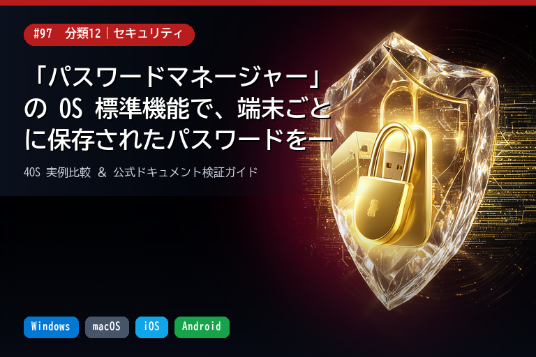

#97｜分類12: セキュリティ・プライバシー対策 2026-11-28

「パスワードマネージャー」の OS 標準機能で、端末ごとに保存されたパスワードを一括管理して安全に引き継ぐ方法
「Webサイトやアプリが増えるたびに、複雑なパスワードを記憶するのが大変……」「スマホで保存したパスワードをPCでも使いたいけれど、どうやって同期すればいいの？」といった悩みをお持ちではありませんか？
パスワード管理にはサードパーティ製の専用アプリを使う方法もありますが、実は「OS標準の機能」を正しく活用するだけで、非常に安全かつスムーズな一括管理・引き継ぎが可能になります。
この記事では、Windows、macOS、iOS、Androidの主要4OSにおける標準的なパスワード管理機能を徹底比較し、それぞれの具体的な操作手順や注意点、よくあるトラブルの解決策を解説します。これを知っておくことで、追加アプリをインストールすることなく、セキュリティと利便性を両立したマルチデバイス環境を構築できるようになります。
4OS比較早見表
| 機能・項目 | Windows 11 | macOS / iOS | Android |
|---|---|---|---|
| 主な管理機能 | Microsoft Edge / Windows Hello | iCloud キーチェーン / Safari | Google パスワードマネージャー |
| 同期の基盤 | Microsoft アカウント | Apple ID | Google アカウント |
| 生体認証連携 | Windows Hello (顔・指紋) | Face ID / Touch ID | 指紋 / 顔認証 |
| 主なメリット | OSとの深い統合、パスキー対応 | デバイス間での極めて高い親和性 | クロスプラットフォームの汎用性 |
| 標準機能の制限 | 主にブラウザ内の情報が中心 | 他社製ブラウザでは同期不可 | Chrome以外のブラウザは別管理 |
1. Windows 11 での実例手順
Windows 11では、Microsoft Edgeブラウザと「Windows Hello」を組み合わせることで、パスワードの保存と安全な認証を実現します。
標準機能の実手順（保存・共有）
- ブラウザ内での同期設定
- Microsoft Edgeを開き、右上の「…」メニュー ＞ 「設定」 ＞ 「プロファイル」 ＞ 「デバイス間をシームレスに使う」を選択します。
. ここで同じMicrosoftアカウントでログインした他のWindows 11 PCやSurface Hubとパスワードが共有されるよう、「Edgeサインイン」機能を有効にします。 - Windows Hello パスキーの活用
- 「設定」＞「アカウント」＞「サインインオプション」から、顔認証（Face ID相当）や指紋認証を有効化します。
- これにより、パスワード自体の入力を省略する「パスキー（Passkey）」機能を利用でき、より安全にサイトへアクセス可能になります。
標準機能の制限事項・注意点
- 保存先の限界: Edgeが管理するのは主にWebサイト内のログイン情報です。OSレベルで「あらゆるアプリのアカウント」を一元管理する専用ツール（Macのキーチェーンのようなもの）は標準では存在しません。
- 同期範囲: Microsoftアカウントを連携していないPCではパスワードが共有されません。「家庭内ネットワークだから自動で繋がる」というわけではない点に注意が必要です。
よくあるトラブルと解決法
- 「デバイス間をシームレスに使う」がグレーアウトしている場合
- 原因: Microsoftアカウントでのログイン未確認、またはEdgeのキャッシュデータ破損。
- 対策: 「設定 > アカウント」から再度サインインし、「Edgeサインイン」のトグルスイッチを一度オフにしてから再接続（再同期）してください。
- 「パスワードを表示できない」というエラーが出る場合
- 原因: 認証プロバイダーとの通信失敗、またはEdgeのセキュリティ設定による表示制限。
- 対策: 「Edge > … > 設定 > プライバシー、検索、サービス > 閲覧データのクリア」でキャッシュをクリアし再起動してください。改善しない場合はMicrosoftアカウントのWebサイトからパスワードリセットを試みてください。
- Windows Hello 認証が失敗してログインできない場合
- 原因: バイオメトリックセンサーの誤作動、またはセキュリティポリシーによるロックアウト。
- 対策: 「設定 > アカウント > サインインオプション」で「パスワードを再入力する」オプションを選択し、従来のパスワードでの認証に一時的に切り替えてください。
2. macOS での実例手順
Apple製品では「iCloud キーチェーン」が非常に強力なパスワードマネージャーとして機能します。
標準機能の実手順（保存・共有）
- Safari ブラウザでの管理
- Safariを開き、設定 ＞ 「パスワード」 ＞ 「iCloudのパスワードを同期する」をオンにします。
- これにより、Apple IDでログインしたすべてのiOS/iPadOSデバイスとMac間で自動同期されます。
- Mac と iPhone 間のシームレスな引き継ぎ
- 「システム設定 > [自分の名前] > iCloud > パスワード」で管理をオンにします。iPhoneのSafariを開くと、Macに保存されたパスワードが自動的に提案されるようになります。
標準機能の制限事項・注意点
- ブラウザ限定: ChromeやFirefoxなど他のブラウザでは「iCloud キーチェーン」とは同期しません。これらを使う場合はGoogleアカウント等の別システムが必要になります。
- 直接編集の制限: セキュリティ上の理由から、一般ユーザーが「キーチェーンアクセス」アプリで手動で鍵を管理・変更することは推奨されず、基本的にはSafariの設定経由での操作が推奨されます。
よくあるトラブルと解決法
- iPhone で Safari からパスワード提案が出ない場合
- 原因: iCloudの同期が無効化されているか、Face ID/Touch IDの認証失敗。
- 対策: iPhoneの「設定 > [自分の名前] > iCloud > パスワード」をオンにし、再度Face IDを試してください。改善しない場合はSafariアプリを再起動します。
- 「パスワードを表示できない」という警告が出る場合
- 原因: Appleのセキュリティポリシーにより、macOS Catalina以降「キーチェーンアクセス」アプリからの直接表示が制限されている。
- 対策: 「Safariの設定 > パスワード」画面で同期を確認し、必要に応じてSafariを再起動してください。手動入力が必要な場合はApple IDでの再認証を行ってください。
- Mac と iPhone の間でデータが同期されない場合
- 原因: Wi-Fi環境の違いやiCloudデバイス管理の不一致（「このデバイスを信頼」していない）。
- 対策: 「設定 > [自分の名前] > iCloud」ですべてのデバイスを選択し、再度同期をトリガーしてください。
3. iOS（iPhone / iPad）での実例手順
iOSではSafariとApple IDが密接に連携し、パスワード管理を簡略化します。
標準機能の実手順（保存・共有）
- Safari のパスワードマネージャー活用
- 「設定」＞「Safari」＞「パスワードとカード」で「iCloudのパスワードを同期する」をオンにします。
- 新しいサイトにログインすると、自動的にApple IDで暗号化して保存されます（Face ID/Touch IDでの承認が必要）。
標準機能の制限事項・注意点
- アプリ内購入情報の管理: アプリ内の独自のパスワードやゲームアカウントはSafariの範囲外です。「App Store」の購入履歴とは別物として扱われます。
- 詳細確認の不可: セキュリティ強化のため、Macと異なりiOSでは「キーチェーンアクセス」に相当する詳細な鍵確認アプリは非公開化されています。
よくあるトラブルと解決法
- 新規サイトでのログイン時に「パスワードを保存する」プロンプトが出ない場合
- 原因: Safariの設定がオフ、またはFace ID/Touch IDが無効。
- 対策: 「設定 > Safari」で「自動入力」関連の項目を確認し、Face IDを再登録してください。
- 「パスワードを表示できない」というエラーが出る場合
- 原因: iOSのセキュリティポリシーによる制限。
- 対策: 「設定 > [自分の名前] > iCloud > パスワード」で同期を確認し、再度Face IDで認証してください。改善しない場合はSafariを再起動します。
- 「パスワードを共有したい」という機能が使えない場合
- 原因: iOS 16以降の「ファミリー共有」機能と連携していない（別途設定が必要）。
4. Android での実例手順
AndroidではGoogleアカウントを基盤としたパスワードマネージャーが標準として提供されます。
標準機能の実手順（保存・共有）
- Chrome ブラウザでのパスワードマネージャー活用
- Chromeを開き、「…」メニュー ＞ 「保存されたパスワード」 ＞ 「すべてのパスワードをGoogleに送信」をオンにします。
- これにより、同じGoogleアカウントでログインしたAndroidデバイス（Pixel, Galaxy等問わず）間で自動同期されます。
標準機能の制限事項・注意点
- ブラウザ限定: Chromeでは「Google パスワードマネージャー」として動作しますが、FirefoxやBraveなど他のブラウザでは別システムが必要になる場合があります。
- 名称の差異: Androidの設定メニューには「デバイス管理センター」という名前の項目は存在しません。「設定 > Google アカウント」からパスワードを管理・共有する必要がある点に注意してください。
よくあるトラブルと解決法
- 「すべてのパスワードをGoogleに送信」がグレーアウトしている場合
- 原因: Chromeのバージョンが古い、またはOSのセキュリティポリシーによる制限。
- 対策: Playストアから最新版のChromeをインストールし、「設定 > Googleアカウント」で再度サインインしてください。改善しない場合はキャッシュをクリアします。
- 「パスワードを表示できない」というエラーが出る場合
- 原因: Androidのセキュリティポリシーにより、直接表示が制限されている（機種やOSバージョンによる）。
- 対策: 「設定 > Googleアカウント > セキュリティとプライバシー」で「パスワードの管理」を確認してください。改善しない場合は「2段階認証プロセス」の有効化を試してください。
- 「デバイス間での同期が止まっている」という場合
- 原因: Wi-Fi環境の違いやGoogleアカウントのセッション切れ。
- 対策: 「設定 > Googleアカウント」から再度サインインし、「すべてのパスワードをGoogleに送信」をオンにして再同期してください。
まとめ：快適なマルチOS環境を作るポイント
各OSの標準機能を正しく使いこなすことで、特別なツールを導入することなく安全なパスワード管理を実現できます。しかし、より高度なセキュリティや利便性を求める場合は、以下の要素を組み合わせるのがプロの推奨です。
- 2段階認証（2FA）の徹底: GoogleアカウントやApple IDでは必ず有効にし、ログイン時の安全性を最大化しましょう。
- パスキー（Passkey）の活用: Windows, macOS, iOS, Androidすべてで対応が進んでおり、「パスワード」自体の入力を不要にするため、漏洩リスクを劇的に減らせます。
- 周辺機器とツールの検討:
- より高度な管理が必要なら、セキュリティキー（YubiKey等）の導入を検討すると、物理的な鍵による最強の防御が可能になります。
- 公衆Wi-Fiなどでの安全性を確保するためにVPNを併用するのも有効です。
- 最後に、OS標準機能と合わせて信頼できるセキュリティソフトを導入することで、マルウェアによるパスワード情報の窃取を防ぐ多層防御を構築しましょう。
標準機能をベースに、これらのツールを適宜組み合わせることで、ストレスフリーで鉄壁のセキュリティ環境を構築することができます。
参考文献・公式ドキュメント（一次情報ソース）
本記事の手順・仕様は以下の各OSおよびツールの公式ドキュメントに基づいています。OSアップデートによりメニュー名称や挙動が変わる場合があるため、最新仕様の確認にもご活用ください。
- [Windows] Windows のパスキー（Passkey）公式ガイド - Microsoft サポート
- [macOS / iOS] パスキーのセキュリティについて - Apple サポート (日本)
- [Android / 共通] パスワードの代わりにパスキーでログインする - Google アカウント ヘルプ
- [共通] 2 段階認証プロセスを有効にする - Google アカウント ヘルプ